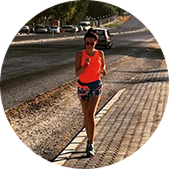

Долго не могла начать бегать, т.к. до этого несколько раз начинала, но
становилось тяжело и я бросала. От друзей услышала о RunSmart и о беге с контролем пульса и
решила попробовать.Позвонила, ребята поинтересовались моими целями и подобрали очень
интересный вариант со скидкой! Теперь бегаю и наслаждаюсь бегом! Пробежала уже 2 полумарафона и
несколько более коротких забегов и не намерена останавливаться!
Спасибо!!!
Иван Сёмочкин
1 полумарафон
Не знала, что себе купить - обратилась к ребятам из RunSmart - подобрали
пульсометр, который подошёл именно под мои цели и финансовые возможности. Через некоторое время
решила обновить гаджет - не раздумывая обратилась туда же.
Новые цели - новый гаджет!
Спасибо, RunSmart!

Юлия Дашкина
2 полумарафона
Крутая штука-пульсометр. Обычно без них бегал. Оказывается только хуже
себе делал. Купил пульсометр, ещё в подарок получил тренировку. Со мной вместе провели первую
тренировку, научили пользоваться новым гаджетом. Также объяснили основы анатомии, составили план
тренировок на месяц вперёд.
С ними подготовился к своему первому полумарафону! Спасибо!!!